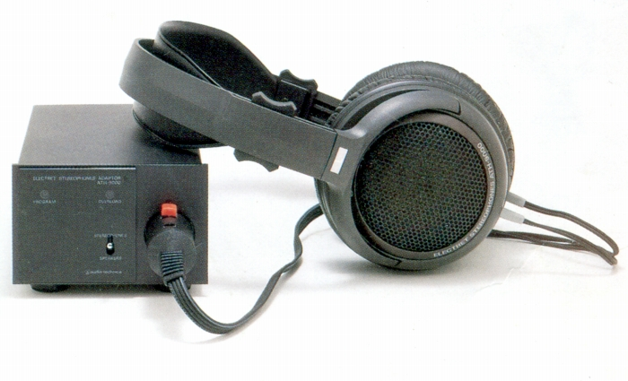

ヘッドフォン近代博物館
〜2000年までのヘッドフォン・データベース

※ここに掲載された写真は，各製品のカタログ等からの抜粋で，その版権・著作権等は，各オーディオメーカー等にあります。
したがって，これらの写真
を無断で転載等することは，法律で禁じられている行為ですのでご注意ください。
2009/02/01 仮開設 2009/07/15 本開設
The page you are currently looking at is an archived version of http://20cheaddatebase.web.fc2.com/ as of April 2025.
The original page became inaccessible since June 2025, due to the discontinuation of FC2's web blog service.
We tried to contact the original author to handle this situation, but they went inactive since 2016, and didn't responded to our email as well.
That being said, this page was created to preserve and maintain the knowledge about vintage headphones that has been accumulated over the years.
Entire content of this wiki remains untouched, but has been re-encoded in UTF-8 for better compatibility.
Please note that the original author of this wiki project mentioned that the photos available here are taken from product catalogs and other materials.
Their copyrights and intellectual property rights are owned by their respective audio manufacturers or others, and unauthorized reproduction of these photographs may be prohibited by law.